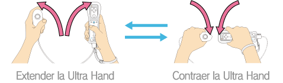
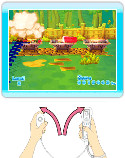
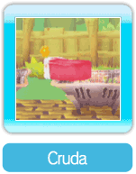
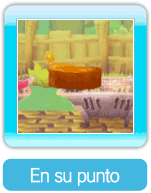
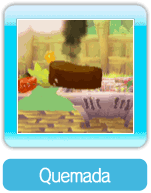
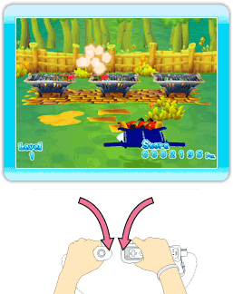

9 |
Cómo jugar |
 |
|
Sujeta el control Wii Remote y el Nunchuk verticalmente, con el puntero mirando hacia arriba. ● Cómo controlar la Ultra Hand ● 1. Recoger la carne Nota: No podrás recoger la carne si aún no está en su punto. ・ Carne ● 2. Transportar la carne ¡Repite los pasos 1 y 2 para llevar hasta tu plato tantas piezas de carne en su punto como puedas! |
 para mover la Ultra Hand de izquierda a derecha y colocarte frente a una pieza de carne en la parrilla. Extiende la Ultra Hand y cuando la carne esté en su punto, mantén oprimido
para mover la Ultra Hand de izquierda a derecha y colocarte frente a una pieza de carne en la parrilla. Extiende la Ultra Hand y cuando la carne esté en su punto, mantén oprimido  para recoger el pedazo de carne.
para recoger el pedazo de carne. |
 |
 |